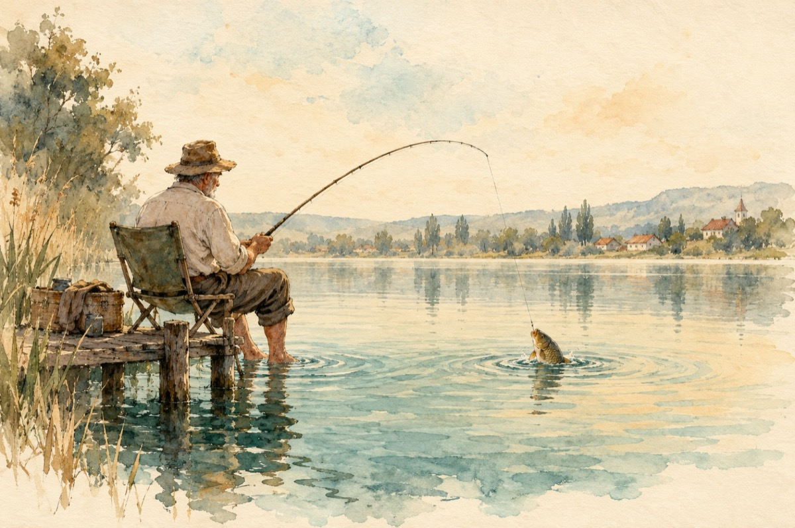

Captură
Astăzi e o zi bogată
Vântul nu bate pe lac
Momeala e aruncată
Să-i fac peștelui pe plac
Stau pe tronul de pescar
Cu picioarele în apă
Ca mine pescar mai rar
Le pun muzică, să le placă!
Să vină în undiță, puhoi
Râma-n cârlig îi așteaptă
Grătaru-i plin de nevoi
Dansul să înceapă!
Râma dă din coadă-n lac
Pornită să cucerească
Iată simt că pe un crap
L-a convins s-o însoțească
Și-amândoi în vals dansează
Și-nspre mine au pornit
Râma veselă-l plasează
Grătarul e pregătit
Pescarul, în sfârșit e mulțumit!
-LA PERESCHIV-
Vasile Groza